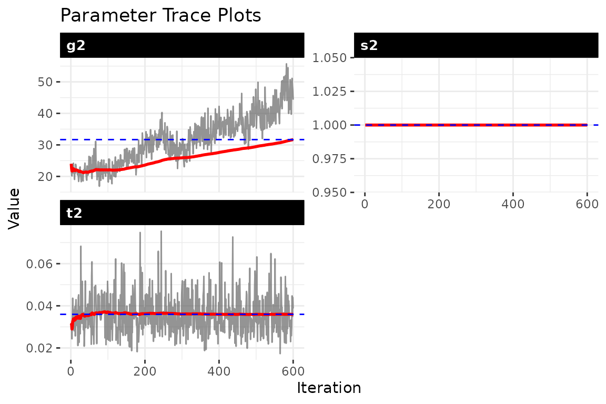

Getting started: static bilinear network model
Tosin Salau & Shahryar Minhas
2026-03-16
Source:vignettes/static_dbn.Rmd
static_dbn.Rmd1 Simulate a small static network
The static model estimates time-invariant sender and receiver effects. We start by simulating ordinal relational data.
set.seed(1)
sim = simulate_static_dbn(n = 15, # network size: 15 actors
p = 1, # single relation type
time = 5) # 5 replicate time periods
Y = sim$Y
dim(Y) # [n_row, n_col, p, time]
#> [1] 15 15 1 52 Fit the model
We pass the simulated array to dbn() and specify the
model type and outcome family. The MCMC sampler draws from the posterior
over latent positions and variance parameters.
fit_static = dbn(sim$Y,
model = 'static',
family = 'ordinal', # rank-likelihood for ordinal data
nscan = 600, # MCMC iterations after burn-in
burn = 200, # burn-in period
odens = 1 # save every iteration
)3 Convergence diagnostics
Always check convergence before interpreting results. You want to see
stable, well-mixed chains with no visible drift or trend. If a trace
plot shows the chain wandering or stuck in one region, increase
nscan and burn.
check_convergence(fit_static)
#> s2 t2 g2
#> 0.00000 600.00000 3.98164
#>
#> Fraction in 1st window = 0.1
#> Fraction in 2nd window = 0.5
#>
#> s2 t2 g2
#> NaN 0.2725 -6.3480
plot_trace(fit_static, pars = c("s2", "t2", "g2"))
4 Model summary and parameter inspection
summary() gives you a high-level overview of the fitted
model, including posterior means and credible intervals for the variance
parameters. param_summary() returns a tidy data frame you
can use for further analysis or plotting.
summary(fit_static)
param_summary(fit_static)
#> parameter mean sd q5 q50 q95
#> 1 s2 1.00000000 0.000000000 1.00000000 1.00000000 1.00000000
#> 2 t2 0.03595741 0.009392147 0.02297707 0.03450002 0.05275058
#> 3 g2 31.68052827 7.814626594 20.39281353 31.40524413 45.655323595 Latent mean structure
The baseline mean M captures the average relational tendency for each dyad. Extract and summarize M across posterior draws:
M_summary = latent_summary(fit_static, fun = mean)
head(M_summary)
#> i j rel value
#> 1 1 1 1 14.7044468
#> 2 2 1 1 -0.7994569
#> 3 3 1 1 -1.3856077
#> 4 4 1 1 -18.1040416
#> 5 5 1 1 -2.4671833
#> 6 6 1 1 0.64073006 Gaussian and binary families
The static model supports all three outcome families. Switch the
family argument depending on your data: use
"gaussian" for continuous outcomes, "binary"
for 0/1 data with a probit link, or "ordinal" when you only
trust the rank ordering of ties.
Gaussian data (continuous outcomes):
# simulate continuous data
set.seed(10)
n = 10; p = 1; time = 5
Z_gauss = array(rnorm(n * n * p * time), dim = c(n, n, p, time))
for (t in 1:time) diag(Z_gauss[,,1,t]) = NA
fit_gauss = dbn(Z_gauss, model = "static", family = "gaussian",
nscan = 300, burn = 150, verbose = FALSE)
summary(fit_gauss)Binary data (0/1 outcomes via probit link):
7 Wrap-up
- We simulated ordinal network data,
- fit a static bilinear model with MCMC,
- checked convergence,
- inspected parameter posteriors and latent means,
- showed how to switch between ordinal, gaussian, and binary families.
For models with time-varying parameters, see
vignette("dynamic_dbn") as the natural next step.